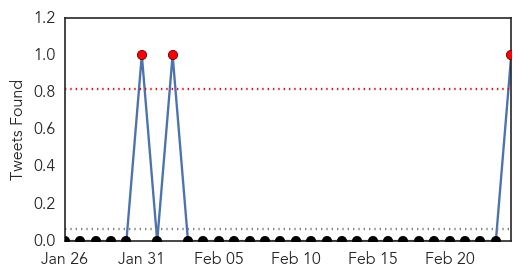
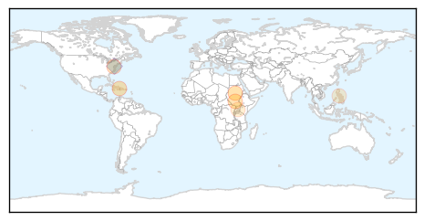

Pertussis
30-Day Web Trend
5 alerts, 2 warnings

30-Day Twitter Trend
0 alerts, 0 warnings

Article Locations

Article Confidences

Top Articles:
Top Tweets:
-
No tweets found for Feb 24, 2014
Cholera
30-Day Web Trend
0 alerts, 0 warnings

30-Day Twitter Trend
3 alerts, 0 warnings

Article Locations
Article Confidences

Top Articles:
- 0.928
- Aid groups struggle to meet South Sudan's needs
- 0.897
- Florida groups criticize UN over cholera lawsuit
- 0.844
- South Sudan Crisis: Donor brief & funding request, 16 February 2014 - South Sudan
- 0.792
- UN Peacekeeper Misconduct in Haiti: panel discussion this Wednesday in Washington, DC
- 0.545
- Owning your crisis - aid partnerships in Haiti - Haiti
- 0.532
- Researchers develop early warning systems for preventing epidemics
Top Tweets:
- 0.803
- Stemming from the 2010 cholera outbreak in Haiti cholera transmission in Hispaniola continues with over... http://t.co/xmkjOsqLFf